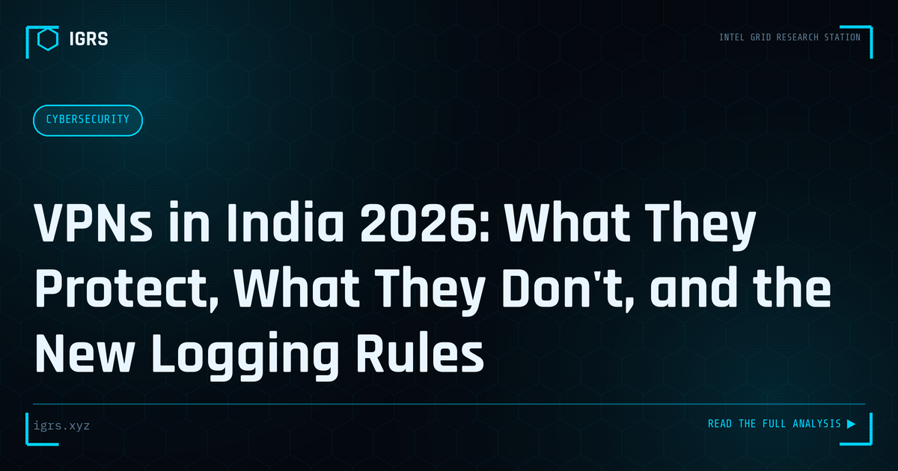

VPNs in India 2026: What They Protect, What They Don't, and the New Logging Rules
| File No. | IGRS-039/2026 |
| Subject | VPN privacy assessment for Indian users under CERT-In 2022 logging directions |
| Category | Privacy & Safety |
| Author | Manuj Kumar Pandey |
| Published | 2026-04-03 |
| Reading time | 12 minutes |
CERT-In 2022 directions require VPN providers to log user data for five years. What this means for your privacy, which providers comply, and what actually protects you.
VPNs and Privacy in India: The 2026 Reality
Virtual Private Networks (VPNs) are widely used in India for privacy, security, and accessing content. But the VPN landscape in India changed significantly with CERT-In's data retention directions, creating new realities for users seeking privacy. Understanding what VPNs do, their legal status, and their genuine privacy implications is essential for anyone relying on them. This guide explains VPNs and privacy in India in 2026.
What a VPN Actually Does
A VPN creates an encrypted tunnel between your device and a VPN server, routing your internet traffic through it. This hides your IP address from the websites you visit and encrypts your traffic from your internet service provider. The result is greater privacy from your ISP and the sites you visit, and protection on untrusted networks like public WiFi. However, the VPN provider itself can see your traffic — a crucial limitation.
Are VPNs Legal in India?
VPNs are entirely legal to use in India. There is no prohibition on using a VPN for privacy, security, or legitimate access. What remains illegal is using a VPN to conduct illegal activity — the VPN does not make otherwise-illegal actions legal. Businesses and individuals use VPNs routinely and lawfully for security and privacy.
The CERT-In Directions Impact
The significant change for VPN privacy in India came from CERT-In directions requiring VPN providers operating in India to retain customer data — names, validated addresses, IP addresses assigned, and usage patterns — for five years. This directly conflicts with the no-logs policies that privacy-focused VPNs are built on. As a result, several major no-log VPN providers removed their physical servers from India, instead offering virtual India-based servers hosted elsewhere.
What This Means for Privacy
| Scenario | Privacy Implication |
|---|---|
| India-based VPN server (compliant) | Logs retained for 5 years |
| No-log VPN with virtual India servers | Servers physically abroad, no-log maintained |
| Foreign VPN provider | Subject to that country's laws |
The Anonymity Myth
A critical misconception is that VPNs provide complete anonymity. They do not. A VPN hides your IP from websites and your activity from your ISP, but the VPN provider can see your traffic. If the provider logs data — as Indian compliance requires — that data exists and can be requested. True anonymity requires additional measures beyond a VPN, and users should understand a VPN as a privacy tool, not an anonymity guarantee.
Choosing a VPN for Privacy
For users prioritising privacy, key considerations include the provider's logging policy and jurisdiction, whether it has undergone independent audits, the strength of its encryption, and how it handles the Indian server requirements. Providers that maintain genuine no-log policies through virtual India servers hosted in privacy-friendly jurisdictions offer better privacy than fully India-compliant logging servers. Reputation and transparency matter greatly.
Legitimate Uses of VPNs
VPNs serve many legitimate purposes: securing connections on public WiFi, protecting privacy from ISP tracking, enabling secure remote work access, and protecting sensitive communications. For investigators and security professionals, VPNs are also an operational security tool, masking their IP during research. These legitimate uses are entirely lawful and increasingly important in a surveillance-heavy digital environment.
VPNs and OPSEC for Investigators
For investigators, VPNs are part of operational security, helping mask their identity and location during online research. However, the same logging realities apply — an investigator relying on a VPN for OPSEC must understand its logging policy and limitations. For sensitive work, investigators often combine VPNs with other measures and choose providers carefully, understanding that the VPN is one layer in a broader OPSEC strategy, not a complete solution.
Beyond VPNs: Layered Privacy
Genuine privacy requires more than a VPN. A layered approach combines a trustworthy VPN with privacy-respecting browsers, careful management of accounts and digital footprint, encrypted communications, and awareness of what data services collect. No single tool provides complete privacy; the combination of good practices across the digital life is what meaningfully protects it.
Making Informed VPN Decisions
For Indian users in 2026, the key is informed decision-making: understand that VPNs are legal and useful but not anonymity guarantees, recognise how CERT-In directions affect logging, choose providers based on genuine privacy policies and jurisdiction, and combine VPNs with broader privacy practices. With realistic expectations and careful provider selection, VPNs remain a valuable privacy and security tool in the Indian digital landscape — provided users understand both their genuine benefits and their real limitations.